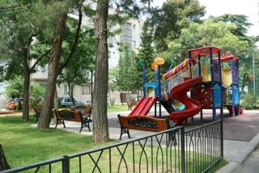
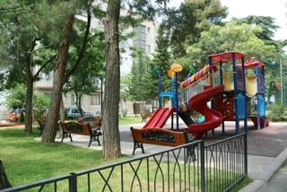

About us

 


Our Mission
Our main goal is green gentrification central district and exploration of the dialogue between the residents, local administration, skilled stakeholders, and ecological foundation. This dialogue should serve as a foundation for joint efforts in improving the eco-social-environmental situation in the neighbourhood.
All project participants will learn how to conduct constructive dialogue and work together to protect the environment and improve their quality of life.
Our Values
We accurately monitor and ensure gender balance in all our projects. Women dominate the project management team and representatives from Tbilisi City Hall.
An equal amount of male and female teachers and students will be involved from the beginning of the project to design the green gentrification project and gardens. The builders and gardeners in the project are men, but the leading landscape designer is a woman.
Meet the team
The non-governmental and non-profit organisation "Child and Environment" has over 25+ years of experience in various projects related to homeless children. The organisation created a shelter for children from the street. Since 1995 "Child & Environment" has provided counselling and courses for the creative and professional redevelopment of those children on an ongoing basis. By doing so, the "Child and Environment" organisation became well known in Georgia and abroad. Employees of the organisation have a track record of working with government bodies, commercial organisations, foundations, and projects to improve children's lives.
During recent years the company, together with its' new coordinator Irina Mostitsca is focusing on Gentrification and eco-activities in the Capital of Georgia, Tbilisi. They already accomplished 2 projects financed by GEF for green Gentrification of six gardens in Tbilisi (3 yards and 3 school gardens) with great success. The idea of the 'Tbilisi New Yard' and "Learning Garden" projects was further developed and spread across dozens of yards and school gardens by the local district administration. Project "Learning Garden" was especially needed for children from disadvantaged families.